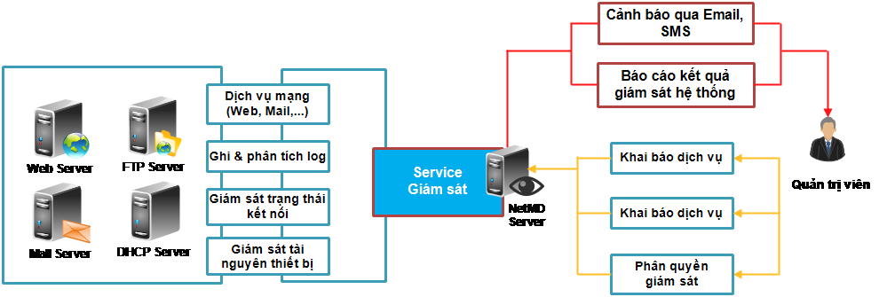

Quản Trị Hệ Thống Mạng Tự Động - NetMD
Ngày nay, quản lý thông tin là vấn đề trọng yếu đối với các doanh
nghiệp. Việc ứng dụng công nghệ thông tin vào quản lý điều hành
làm thay đổi mô hình và cách thức kinh doanh, tăng cường uy tín và
quảng bá hình ảnh doanh nghiệp đến người tiêu dùng. Hệ thống hạ
tầng và dịch vụ mạng là cơ sở cho toàn bộ hoạt động trao đổi thông
tin trong doanh nghiệp, một hệ thống hạ tầng và dịch vụ mạng tốt
là hệ thống có khả năng đáp ứng và độ tin cậy cao.
Việc giám sát độ tin cậy và khả năng đáp ứng hệ thống hạ tầng và
dịch vụ mạng còn gặp phải nhiều khó khăn do:
-
Số lượng thiết bị và dịch vụ cần giám sát quá lớn
-
Không thể giám sát hệ thống 24/24 bằng con người
-
Khó phát hiện, xác định nguồn gốc lỗi và xử lý kịp thời ngay
khi có sự cố phát sinh
-
Hạn chế năng lực xử lý các sự cố
Trên thế giới đã có một số giải pháp giám sát hệ thống mạng. Tuy
nhiên, các giải pháp này còn nhiều nhược điểm như:
-
Chi phí đầu tư cao (chi phí mua bản quyền phần mềm, chi phí mua
thiết bị giám sát)
-
Cài đặt và cấu hình phức tạp dẫn đến cảnh báo sai
-
Không thể giám sát hệ thống mọi lúc, mọi nơi
-
Chưa phù hợp với nhu cầu đặc thù của một số cơ quan, doanh
nghiệp Việt Nam
-
Không đảm bảo an toàn và bảo mật thông tin, đặc biệt là đối với
cơ quan Nhà nước, tập đoàn kinh tế lớn do các giải pháp này can
thiệp sâu vào hệ thống
Thấu hiểu được nhu cầu và khó khăn trên, Trung Tâm Tin Học – ĐH
Mở đã phát triển giải pháp Quản trị hệ thống mạng tự động NetMD.
NetMD được xây dựng theo giải pháp ứng dụng SaaS (Software as a
Service), hoạt động hoàn toàn trên nền web. Người quản trị có thể
giám sát cùng lúc nhiều thiết bị hạ tầng mạng và các dịch vụ thông
qua một giao diện duy nhất.

Mô hình hệ thống NetMD
Hệ thống NetMD có các ưu điểm:
-
Giám sát 24/24 trạng thái hoạt động của các thiết bị mạng:
router, switch, server, máy trạm, đường truyền,…
-
Giám sát, cảnh báo sớm hoạt động của thiết bị mạng: dung lượng
ổ cứng, dung lượng RAM, băng thông đường truyền,… đưa ra các
cảnh báo khi các thiết bị này hoạt động gần hết hiệu suất
-
Giám sát các dịch vụ: Web, IMAP, SMTP, POP3, SSH, Telnet, DNS,
DHCP, FTP,…
-
Quản lý tập trung nhiều site cùng lúc
-
Báo cáo hoặc cảnh báo realtime hoạt động của hệ thống mạng qua
tin nhắn SMS, email
Hệ thống Giám sát và cảnh báo mạng tự động NetMD giúp quý khách
hàng đánh giá tổng quan hoạt động của toàn bộ hệ thống thông tin
tại đơn vị. Từ đó, có phương án quản trị các dịch vụ, bảo trì hoặc
thay thế kịp thời các thiết bị có nguy cơ hỏng hóc nhằm đảm bảo hệ
thống hoạt động ổn định mang lại hiệu quả công việc cao
nhất.